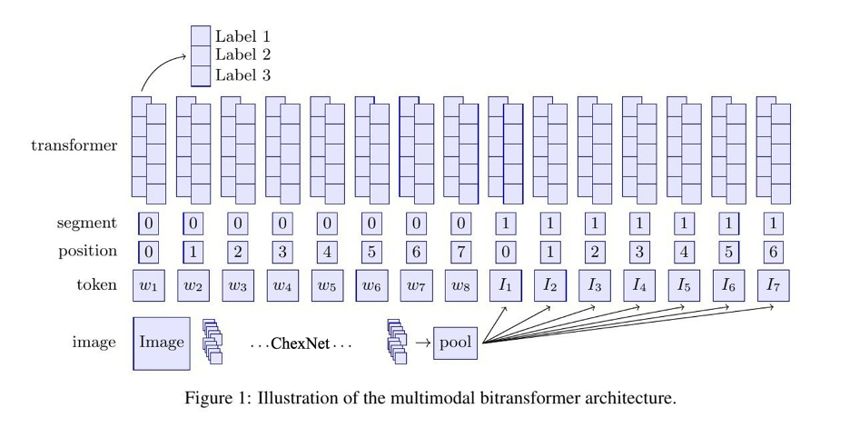

多模态最近比较火
多模态任务的input和算法FATE不支持，因此需要开发新的dataloader和算法组件。
本篇就以肺炎多模态任务为例，介绍如何开发新的FATE机器学习组件
官方文档在这里：https://fate.readthedocs.io/en/latest/develop/develop_guide/#develop-an-algorithm-component-of-fate
baseline 本任务将开发基于肺部X光图像和描述文字正确判断是否患有肺炎的二分类算法。
数据集输入由两部分组成。一部分为肺部X光扫描图像，另一部分为对图像的描述文字。数据标签分为0和1，分别对应正常和患有肺炎两类标签。
本地代码复现
baseline 代码在这里：https://github.com/AxelAllen/Multimodal-BERT-in-Medical-Image-and-Text-Classification
将其clone到本地，按照README.md的提示，将NLMCXR_png_frontal图像文件夹放到data目录下。执行data/preparations.ipynb生成元数据。
执行run_mmbt.ipynb
执行完毕后，会在根目录下生成mmbt_output_findings_10epochs_n文件夹，里面保存有模型拟合后的梯度和评估结果。
阅读代码 这里要弄清楚代码的整套流程，主要是超参、使用的算法、训练、数据处理和加载，模型如何评估这几步。这里只展示核心代码
超参
参数
值
Epoch
10
Bacth_size
16/32
Optimizer
AdamW
LR
5e-5
Loss
CrossEntropyLoss
Metrics
Accuracy
有趣的是，如果batch size = 4，模型无法训练处任何结果。
算法 transformer_config = AutoConfig.from_pretrained(args.config_name if args.config_name else args.model_name, num_labels=num_labels) tokenizer = AutoTokenizer.from_pretrained( args.tokenizer_name if args.tokenizer_name else args.model_name, do_lower_case=True , cache_dir=None , ) transformer = AutoModel.from_pretrained(args.model_name, config=transformer_config, cache_dir=None ) img_encoder = ImageEncoderDenseNet(num_image_embeds=args.num_image_embeds) multimodal_config = MMBTConfig(transformer, img_encoder, num_labels=num_labels, modal_hidden_size=1024 ) model = MMBTForClassification(transformer_config, multimodal_config)
使用MMBT模型: 用于图像和文本分类的有监督多模态双向Transformer。
图像编码器使用的ChexNet，这是一个针对X光胸片肺炎检测的模型；
文本编码器使用的预训练的BERT模型：bert-base-uncased。
整体网络结构如图

data loader dataset = JsonlDataset(path, img_dir, tokenizer, img_transforms, labels, wandb_config.max_seq_length - wandb_config.num_image_embeds - 2 ) ... train_dataloader = DataLoader( train_dataset, sampler=train_sampler, batch_size=args.train_batch_size, collate_fn=collate_fn )
train for _ in train_iterator: epoch_iterator = tqdm(train_dataloader, desc="Training Batch Iteration" ) for step, batch in enumerate (epoch_iterator): batch = tuple (t.to(args.device) for t in batch) labels = batch[5 ] input_ids = batch[0 ] input_modal = batch[2 ] attention_mask = batch[1 ] modal_start_tokens = batch[3 ] modal_end_tokens = batch[4 ] outputs = model( input_modal, input_ids=input_ids, modal_start_tokens=modal_start_tokens, modal_end_tokens=modal_end_tokens, attention_mask=attention_mask, token_type_ids=None , modal_token_type_ids=None , position_ids=None , modal_position_ids=None , head_mask=None , inputs_embeds=None , labels=labels, return_dict=True ) logits = outputs.logits loss = outputs.loss loss.backward()
评估 result = evaluate(args, model, tokenizer, evaluate=True , test=True , prefix=prefix)
开发新组件 当我们已经在本地跑通代码，并明确算法之后，就可以开发新的组件，将算法联邦化。
这里官方文档写的很清楚，我大概复述一下
Step 1. Define the python parameter object to be used by this component
Open a new python file called xxx_param.py, where xxx stands for your component’s name. Place this file in the folder python/federatedm/param/. The class object defined in xxx_param.py should inherit the BaseParam class declared in python/federatedml/param/base_param.py
The __init__ method of your parameter class should specify all parameters that the component uses.
Override and implement the check interface method of BaseParam. The check method is used to validate the parameter variables.
python/federatedml/param/__init__.py列表__all__增加你的组件名称，并导入。
我这里组件名称叫homo_mm，所以创建的python文件名为homo_mm_param.py。由于和homo_nn很像，所以直接讲homo_nn_param.py复制过来，将里面的“nn”改成“mm”。
第四步增加了
from federatedml.param.homo_mm_param import HomoMMParam... __all__ = [... "HomoMMParam" , ...]
python/federatedml/param/init .py
Define component meta python file under python/federatedml/components/, name it as xxx.py, where xxx stands for the algorithm component being developed.
Implement the meta file.
我这里组件名称叫homo_mm，所以创建的python文件名为homo_mm.py。由于和homo_nn很像，所以直接讲homo_nn.py复制过来，将里面的“nn”改成“mm”。
Step 3. Define the transfer variable object of this module. (Optional) 这里不需要
Step 4. Create the component which inherits the class model_base 现在就可以将python/federatedml/nn/homo_nn复制一份，修改为homo_mm，修改_torch.py文件
详略。
additional 需要注意在python/federatedml/nn/backend/pytorch/data.py新建新的dataset。并在_torch中的make_dataset创建，这里可以参照VisionDataSet
class MMDataSet (DatasetMixIn ): def get_num_labels (self ): return None def get_num_features (self ): return None def get_keys (self ): return self._keys def as_data_instance (self ): from federatedml.feature.instance import Instance def _as_instance (x ): if isinstance (x, np.number): return Instance(label=x.tolist()) else : return Instance(label=x) return computing_session.parallelize( data=zip (self._keys, map (_as_instance, self.targets)), include_key=True , partition=1 , ) def __init__ (self,train_data_path, is_train=True , expected_label_type=np.float32,**kwargs ): if is_train: HomoLabelEncoderClient().label_alignment(["fake" ]) tokenizer = AutoTokenizer.from_pretrained( "bert-base-uncased" , do_lower_case=True , cache_dir=None , ) labels = [0 ,1 ] labels2id = {'0' : 0 , '1' : 1 } self.labels2id = labels2id self.data = [json.loads(line) for line in open (os.path.join(train_data_path, "meta.jsonl" ))] self.targets = [ item['label' ] for item in self.data] self.img_data_dir = os.path.join(train_data_path, 'images' ) self.tokenizer = tokenizer self.labels = labels self.n_classes = len (labels) self.max_seq_length = 300 - 3 - 2 self.transforms = torchvision.transforms.Compose( [ torchvision.transforms.Resize(256 ), torchvision.transforms.CenterCrop(224 ), torchvision.transforms.ToTensor(), torchvision.transforms.Normalize( mean=[0.485 , 0.456 , 0.406 ], std=[0.229 , 0.224 , 0.225 ] ) ] ) key_dic = [] for id in range (len (self.data)): key_dic.append(id ) self._keys = key_dic pass def __getitem__ (self, index ): sentence = torch.LongTensor(self.tokenizer.encode(self.data[index]["text" ], add_special_tokens=True )) start_token, sentence, end_token = sentence[0 ], sentence[1 :-1 ], sentence[-1 ] sentence = sentence[:self.max_seq_length] if self.n_classes > 2 : label = torch.zeros(self.n_classes) label[self.labels.index(self.data[index]["label" ])] = 1 else : label = torch.LongTensor([self.labels.index(self.data[index]["label" ])]) image = Image.open (os.path.join(self.img_data_dir, self.data[index]["img" ])).convert("RGB" ) image = self.transforms(image) return { "image_start_token" : start_token, "image_end_token" : end_token, "sentence" : sentence, "image" : image, "label" : label, } def __len__ (self ): return len (self.data) def get_label_align_mapping (self ): return self.labels2id
如果Job仍然跑不起来，可以通过FATE-BOARD日志排错。